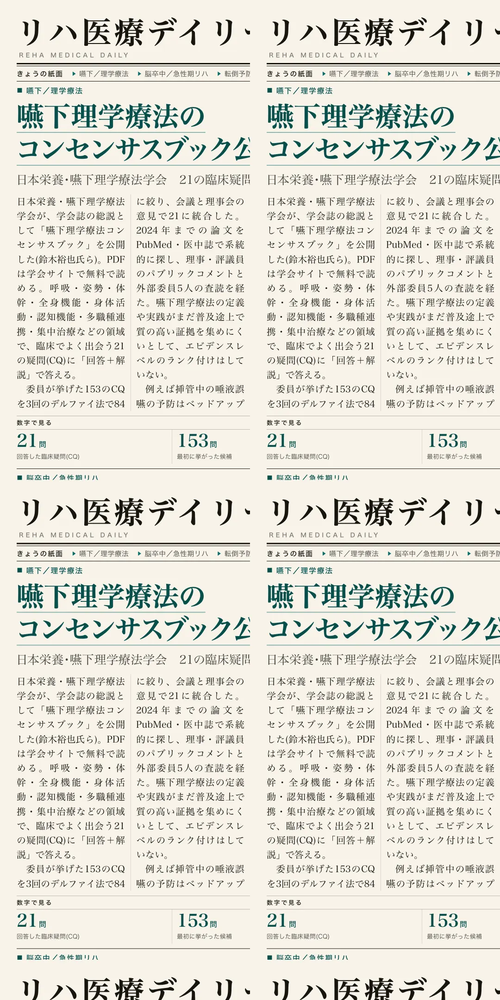
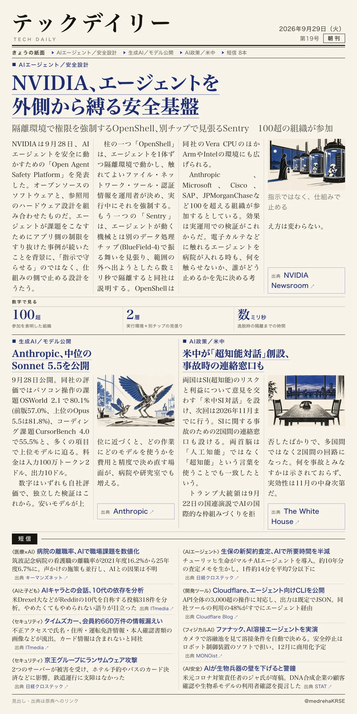

リハ医療デイリー
嚥下理学療法のコンセンサスブック公開
日本栄養・嚥下理学療法学会 21の臨床疑問に回答、エビデンスレベルは付けず
日本栄養・嚥下理学療法学会が、呼吸・姿勢・離床・集中治療など21の臨床疑問に答えるコンセンサスブックを学会誌で公開した。

テックデイリー
NVIDIA、エージェントを外側から縛る安全基盤
隔離環境で権限を強制するOpenShell、別チップで見張るSentry 100超の組織が参加
NVIDIAが、AIエージェントが運用者の決めた範囲の外で動くのを防ぐソフトとハードの組み合わせを発表した。
